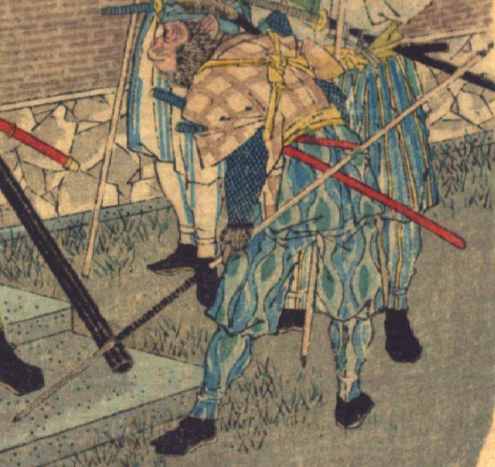

猿。茶色の着物に黄色の襷を掛け、青色の袴、脚絆を身につけ、地下足袋をはいている。腰に2本刀を差し、左前脚に槍をもって、上半身を屈めて、前方をうかがっている。
著作者：David Thompson／出典：親書誌：U426_nichibunken_0116：Momotaro／日付：2006／資源識別子：U426_nichibunken_0116_0001_0001
Copyright (c)2010- International Research Center for Japanese Studies, Kyoto, Japan. All rights reserved.